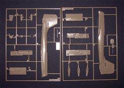
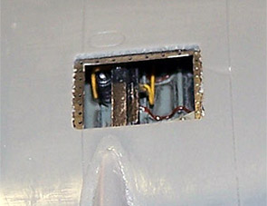
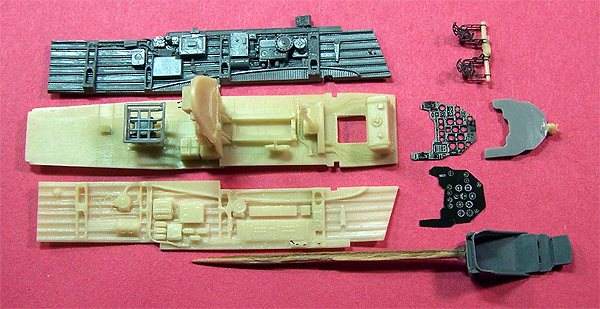
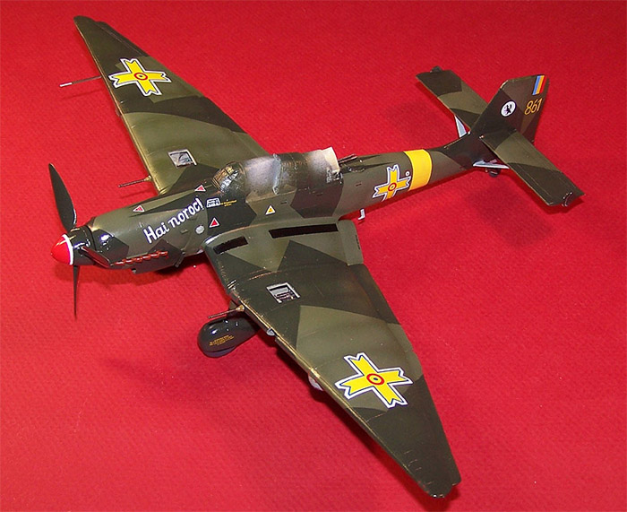

Hasegawa 1/48 Ju-87 D Stuka “Regia Aeronautica”
Kit #09546
MSRP $32.50
Images and text Copyright © 2005 by Matt Swan
Developmental Background
I’ve already done a fairly in depth review of the Stuka’s developmental background in my review of the Hasegawa Ju-87 G-2 ‘Panzerknacker’ so I shall not regurgitate that here. If you are unfamiliar with the history of the Stuka follow that link otherwise let’s jump right into the review of this Hasegawa kit.
The Kit
Once again I’m going to refer you back to the Ju-87 G-2 model reviewed earlier because this is nearly identical to that model. The differences are obviously that this kit does not include the Aires 37mm Bordkannones and slightly less obvious that it has the early short wing. This is the original wing design that Hasegawa stretched for the G-2 kit. When the wing was stretched a really nasty step was molded in from the mold modification. None of this exists in this kit. One other little addition to this kit is a set of white metal night exhaust stacks. That’s it; there are no other differences between the two kits! At this point you might be thinking ‘this is pretty lame, why would he even bother to do a separate review for this kit?’ That may seem a valid thought but stick with me; it all will pay off shortly. One comment on the possibilities of this kit, it is intended to build a D-3 but can be converted to a G-1 with 37mm cannons if you pick up the Aires cannon set. The wing shows all the correct mounting holes for this conversion they are simply flashed over right now. Real quick, let’s wrap up this aspect of the review – here is a look at the clear parts and here you can see those white metal night exhaust stacks. Below are the scans of the kit parts and you can click on them to view larger images.

Decals and Instructions
The kit instructions are basically the same as those for the G-2 just with the cannon installation steps omitted and the short wing pictured. All the step numbers and part numbers match between the two kits.
The decals are quite different in this kit (verses the G-2 kit) providing the modeler with a full set of Italian markings for two different birds. Using the kit decals you can model an aircraft from 216 Squadriglia, 121 Gruppo or a unit from 207 Squadriglia, 103 Gruppo. The decals are well printed with crisp colors and excellent print registration. They also include plenty of service stencils and warning markings. They are nicely thin and as with most Hasegawa decals, behave well with common decal setting agents. Overall these deals are perfectly adequate to model the intended aircraft.
Conclusions
There can be no argument that Hasegawa really nailed the basics of the Stuka and have utilized the primary molds to produce multiple variations of this recognizable bird. This kit shows all the features that we have come to expect from this manufacture – good parts design, clean molding, good fit, easily understood instructions and really nice decals. Since the Stuka has such a reputation in history and in the modeling community there are plenty of aftermarket items to choose from ranging from small photo etched sets for the interior and exterior to full engine add-ons, cockpit replacements and decal sheets. You can spend lots more on aftermarket stuff than you will on the basic kit. If you are planning on building the aircraft examples offered in the kit there is little need for these extra items but what fun would that be?
Construction
Remember when I said to stick with me on this review? Well here is where it begins to pay off. I suffer from Advanced Modeler Syndrome (AMS) and as a result have a very hard time building a model straight from the box. I was cruising E-Bay some time ago (didn’t even own this kit then) and saw a set of Aires Ju-87 open gun bays and thought “that would look pretty cool” and bought the set. Is that outrageous or what, don’t even own the kit and I’m buying detail pieces. Oh well, it gave me an excuse to buy the kit. So now I’m looking at building a D-3 with open gun bays, not too bad but not good enough. I like Italian subjects just fine but I like Romanian subjects even better. The Luftwaffe shipped a total of 115 Ju-87 Stukas (all D series aircraft) to Romania over a period of time initially all marked with standard Luftwaffe markings. This created a slight problem with the Romanian pilots as they refused to fly the aircraft with German markings. One night the German ground crews painted over all the Luftwaffe markings and replaced them with King Michael’s Yellow Crosses to resolve the issue. Now I have my subject coming into focus – a Ju-87 D-3 in Romanian livery with open gun bays. Hey look, now I have an excuse to buy some Aeromaster Stuka decals, specifically set number 48-140 Stuka Bombers Part 1 which covers a Romanian Ju-87 D-8 – good usable base material.
This is good but still not good enough. I’m not building a D-8 so only some of these markings will be used; others will have to be scavenged from other sources. But wait … let’s make this a D-5! What’s the difference you ask? Well, a D-5 is very similar to a D-3 but was the first version of the Stuka to feature the stretched wing. Now just how am I going to manage that? I have the G-2 kit sitting in the stash so I will steal the stretched wing from that kit and use it in this kit. “Wait a minute” you say. Why not just use the G-2 kit? Well, I really want to build a cannon armed Stuka at some point so will settle for a G-1 which is the same aircraft just with the short wing. This way I will end up with two unique Stuka models and not waste any kits. Whew, did you follow all of that? Let’s summarize real quick … we will take the D-3 kit, replace the wing with the G-2 wing, add open 20mm gun bays from Aires and put it in Romanian livery. One last thing, I’m going to replace the cockpit with the Aires Ju-87 D resin cockpit just for laughs. Sound good? Good, let’s get busy.
Take a look at this nasty little step that is in the stretched wing from the G-2 kit. This is the first thing that needs to be addressed. I start with a 320 grit sanding stick and wet sand this step off the wing tip. This pretty much wipes out all the panel lines right here also and this step is evident in all four wingtips – two uppers and two lowers. Once the major sanding is done I shift over to a fine 600 grit paper and wet sand the area to give the skin a smooth finish. Some Dymo tape is laid across the wing over the old panel line locations and I scribe the lines back in with a steel scribing tool. This only takes a few minutes then the area gets another light wet sanding to smooth the edges of the new lines and the wingtips are now presentable.
Next the gun bays need to be opened up. The Aires set gives us complete resin internal bays along with resin cannon barrels and a small sheet of photo etched parts for the top panel and its detail along with some internal bay structure.
Since the Aires package includes replacement PE bay covers there is no need to try to salvage the molded covers on the Hasegawa kit. This does make life easier. I begin with a medium burr bit mounted in My Dremel and open a hole in the center of the kit panel then widen it almost to the engraved panel line.
Once the majority of the plastic has been removed I shift over to a fresh Xacto razor knife and trim the opening even closer to the panel lines. One last equipment change here as I go to a flat diamond needle file and finish the opening (image #1 below). I remove one cover panel from the Aires PE sheet and test fit it to the new opening. A slight adjustment to the opening is needed with the needle file and the fit is perfect.
The thickness of the plastic material of the wing surface is not to scale around the opening. To remedy this I change the Dremel over to a small sanding stone, set the speed at its lowest possible setting and begin to make fast, low pressure passes over the inside of the wing surface around the perimeter of the opening. I keep my finger against the upper surface to monitor the temperature of the plastic to prevent it from getting too hot and melting. I also do not work one area very long with the Dremel keeping the work spread out to allow for temperatures to lower. Occasionally I will hold the wing up to a light source so I can see just how thin the plastic is getting and to see where I need more sanding. Before too long the area has been thinned to my satisfaction (image #2 below).
The Aires package includes an internal lip for the bay which is now removed from the sheet and installed. I spread a thin layer of superglue on the thinned interior lip and place the new PE part here (image #3 below) making sure it is lined up with the hole viewed from the top of the wing. I place the bay cover next to the completed opening to get an idea of how things will look after all the detail work is complete (image #4 below).
10/14/05
Now that the opening is complete I’ll start putting the internals together. This part is pretty simple with the cannon body already cast in place and just the ammo chute needing to be super glued in place. This is done with each set then the bays head for the paint room where they are primed with Mr. Surfacer 1200.

After the primer has dried they are painted with RLM 02. The cannons are done with Tamiya Burnt Iron and dry brushed with silver. The single hydraulic line is painted dark brown with a teal filter can. A few magnet wires painted yellow are added to the stock of the cannon to help keep things looking busy and the whole thing gets a good wash of brown and black.
To place the assembly into the wing I set it in the general area loose and hold the wing halves together. With tweezers I position the resin piece to line up with the cannon sleeve in the leading edge of the wing. Gentle pressure on the wing halves hold it in place and I can reach into the wing through the root area with a toothpick loaded with superglue to spot two corners of the resin to the lower wing panel. A quick touch of accelerator locks it in place and the top halve of the wing is removed. Now I can add more superglue to the outside edges of the resin piece to secure it to the wing properly. I open up various holes in the lower wing for bomb racks, radiators and dive brakes using a fine drill bit. Now the upper wing panel is put back in place and secured with Tenax 7R. This is all repeated with the other side. The glue seam is sanded smooth after having plenty of time to harden and the underwing bomb racks and radiators are glued in place.
I thought long and hard about the dive brakes, whether to put them on or not. According to historical specifications the D-5 did not carry dive brakes but there are several period photos of D-5s that clearly show the dive brakes under the wings. Since this was going to carry a full bomb load I decided to just put the brakes on and be done with it. I also started work on the landing gear struts – I plan on masking the wheels off then paint the struts while on the wing.
Moving right along it’s time to start working on the fuselage. This begins with the Aires Ju-87D replacement cockpit. Pictured at right are the pieces that come in this nice little package. With a MSRP of $23.99 it can be found slightly cheaper through some of the on-line hobby shops such as Great Models. Even for the $23.99 it seems to be well worth the money.
After giving the resin pieces a quick inspection they are washed with warm soapy water, rinsed and allowed to air-dry. The cockpit floor pan has a massive resin pour stuff that I removed with a sanding drum on my Dremel. It is most imperative that a good dust respirator be used when grinding resin like this. The side panels were more easily removed from their pour stubs by tracing the demarcation line several times with the point of my razor knife then snapping them free. I usually work with some 4 power reading glasses when building fine detailed but this next step required moving up to a 15 power Omni visor. With this I placed all the little tiny PE levers on the dash, the side walls and the radio panel.
The back side of the acetate instrument panel is painted white and set aside. The pilot seat is removed from its pour stub and mounted on a toothpick. Sidewalls and floor pan are test fit to the fuselage sides and some very slight adjustments are made with a needle file. The joystick, seat adjustment lever and radio panel are mounted to the floor pan. The gunner’s seat is assembled and glued in place. The rudder pedal assembly is put together and boy is this a nifty piece of work.

So here we are just before heading to the paint room. All these subassemblies are primed with Mr. Surfacer 1200 before being painted with RLM 66 black/gray. The dash cover is done with flat black before final details are added. One thing I forgot to mention about the Aires set – for some reason it came with pieces cast in different colors of resin. This is no big deal as the primer makes all things equal on that score. Also pictured here is the original kit dash with the details sanded off and the new Aires resin gun sight in place.
10/15/05
While the RLM 66 was drying I painted the seatbelts light gray and detailed the buckles with silver. I used a 10 X 0 fine brush and rimmed the inside of a few instrument bezels with red and yellow then added color to the various PE handles around the cockpit. A couple of Mike Grant instrument faces were used on some sidewall instruments and on the radio panel. I used some dark tan to dry brush the various electrical cables strung throughout the cockpit. The seatbelts were superglued to the seat frames and the entire cockpit area was dry brushed lightly with silver and light gray before getting a dark brown sludge wash. I think this is just about ready to get placed into the fuselage. I do need to open up a couple of service ports in the fuselage wall first.
10/23/05
Two small service ports were opened up one on each side of the aircraft. The outside surface of the Aires cockpit sidewalls has some detail molded in at these locations and the fit was checked before proceeding. I began with the left cockpit sidewall gluing it to the fuselage inner wall with a health amount of medium superglue. Next the floor pan was installed and lightly tacked in place so it could be adjusted if needed for the right sidewall. The right sidewall is placed loosely into the fuselage and the halves are closed up. Working with some fine electronics tweezers I adjust the position of the right sidewall and cockpit floor slightly then reach into the model with a toothpick loaded with medium superglue to tack the right sidewall in place. Now the fuselage is opened up and the Aires pieces are glued more firmly in place. The rudder assembly is test fit, the connecting rod is shortened slightly and it is then glued in place. Again the fuselage is closed and the positioning of the rudder pedal assembly is checked – so far, so good. Next the dash is fit into place and here I find a fit issue with the gun sight. I have to remove the gun sight from the dash and set it aside. I’ll replace it later in the build.
So far everything is fitting very well so the fuselage goes together one last time, the fit of the aft machine gun station is checked (just to make sure I can get it installed after the fuselage is together) and the two halves are glued together with Tenax 7R. This assembly is set aside to allow the glue to cure and I begin work on the aft machine gun station.
 The resin pieces are cleaned up and assembled then the PE ammo belts are bent into shape. I used a pair of flat tipped tweezers to bend the ammo belts to an approximate shape then glued them in place. Once the assembly is complete the piece was painted RLM 66. The shell bag was done in dark tan, the guns in Burnt Iron with a silver dry brush and the outside edges of the ammo belts were done with brass. The whole thing got a sludge wash and was fit to the model. When fitting into the model the ammo belts were compressed down to clear the canopy and provide for a more realistic look.
The resin pieces are cleaned up and assembled then the PE ammo belts are bent into shape. I used a pair of flat tipped tweezers to bend the ammo belts to an approximate shape then glued them in place. Once the assembly is complete the piece was painted RLM 66. The shell bag was done in dark tan, the guns in Burnt Iron with a silver dry brush and the outside edges of the ammo belts were done with brass. The whole thing got a sludge wash and was fit to the model. When fitting into the model the ammo belts were compressed down to clear the canopy and provide for a more realistic look.
Progress makes a fast leap forward at this point. The wings are attached and the tail surfaces are glued in place. I avoid putting any fine details like boarding steps or pitot tubes on until all filling and sanding has been completed. The seams along the fuselage, wing roots and belly connections are all filled with Mr. Surfacer 500. The engine cowling is assembled and those seams are filled also. One thing I need to research now it the pilot’s lower viewing window. The kit includes a clear part for this but the small plastic section that fits into the lower fuselage has no opening so I need to find out just what the deal is. Lance Braman came to the rescue with some very good information on the window.
He informed me that “the belly had an opening shutter, hinged at the leading edge that opened up into the airframe when the window was to be used for aiming. In normal flight, or on the ground, the shutter would have been closed. The window in the cockpit floor was not flush with the floor. It was mounted at an angle, with the forward edge higher than the
aft edge, so that when the pilot looked down he wasn't looking straight down a vertical hole out the belly, but rather he was looking out an angled chute seeing down and forward.” This is all great information but I want to model this with that shutter open and needed a logical reason for it to be open on the ground. Well, here is my idea – the wing gun ports are already open, there are two service ports on the fuselage open so obviously the aircraft is being serviced on the ground. So why not position a service guy kneeling down under the aircraft reaching into the open bomb aiming window to service the shutter? That’s my story and I’m sticking to it, thanks Lance.
The molded in shutter is removed from the ventral fuselage piece, the kit clear part is masked and glued in place then the piece is glued to the aircraft. The various seams are wet sanded, the landing gear is installed and the engine nacelle is glued in place. It’s starting to look like a Stuka!
11/6/05
The front canopy and mid section canopy are masked then glued in place with Testors Clear parts cement. The cockpit area is gently filled with tissue paper with special care being taken to not damage any of the PE parts. The open gun bays are packed with dampened tissue and the wheels are wrapped with strips of masking tape. All seams are inspected one more time, canopy masked are double checked to make sure nothing is lifting and nothing was missed. I think it’s time to fire up the airbrush. I’m using a Badger 360 airbrush attached to a five gallon reservoir can and an old ¾ horse piston compressor. The compressor is old and loud but with the five gallon can I usually don’t have to run it more than once for five minutes for every day that I’m painting. I also have an adjustable regulator attached so I can quickly change air pressure as needed.
First things first, the air pressure is spun down to about 10 psi and the canopy frames are painted with RLM-66 for interior color. Once this has dried for an hour the entire model is painted with Mr. Surfacer 1200 thinned 50% with lacquer thinner and air pressure up to nearly 20 psi. This is allowed to cure overnight then the walkways are done with Testors flat black then masked off.
I mixed some Testors Flat Black and Testors Flat White enamels and thinner them with some lacquer thinner to make a dark gray solution. This was then used to preshade the model. I set my air pressure down to about 6 psi and moved in very close to paint the panel lines. The entire model was worked over and about an hour later I had a nicely stripped Stuka and a cramped lower back. Next I brush painted the shock absorbers on the struts flat black, masked the shocks, air brushed the lower sections RLM-70 Black/Green, masked this off and airbrushed the upper sections of the gear RLM-71. All the landing gear masks were removed then the gear was remasked mostly with tissue paper.
You may click on the small images above to view larger pictures.
Another day passes and the wing tips and center section of the fuselage are painted flat yellow. This was done with Testors enamel thinned with lacquer thinner and shot at about 8 psi up close to trace the panel outlines then dusted from a greater range to blend in the darker panel lines. A few hours were allowed for this to dry and the yellow areas were masked off with 3M masking tape cut into thin strips. The blue undersurfaces were done with Gunze-Sangyo RLM-65 thinned with Isopropyl Alcohol with the same technique used for the yellow. A foot note here, I am trying to balance the descriptive process here so as to give the newer modeler a reasonable idea on how to achieve this without boring the experienced modeler to death with stuff he already knows. If you are just trying this technique and have questions feel free to email me for more direction – I’m always happy to help the up and coming modeler. Once the RLM-65 is one the wingtip masks are removed, the strut masks are left in place.
Time for more masking tape. The lower demarcation lines are masked off and the tail plane struts are wrapped with tape then the upper surfaces are airbrushed with Polly Scale RLM-71 (the lighter of the two greens) using the same technique as the lower surfaces. After about fifteen minutes of dry time I mixed some Gunze Flat White with some of the base RLM-71 to lighten it slightly then over sprayed the center sections of each panel with this mixture. The effect was not very noticeable at this point but once you step back it really speaks to you. This pretty much wraps up the evening of painting and the model sets overnight to dry again.
More masking tape – I buy big rolls of this stuff, big wide rolls. Working with the Hasegawa painting guides close at hand (Aeromaster painting guides are very similar) I mask off the RLM-71 pattern with thin strips of tape followed by wider strips until each section is covered. This took most of one modeling session before it was ready for paint again. This time I’m working with Gunze-Sangyo RLM-70 and following the same process as with the RLM-71. The preshading really looks like it is getting lost with the darker green and even when I lighten some of it for the center sections it does not look like I’m doing anything. When I finish this off with the dull coat the fading of the dark panels will become a little more visible and really I do not want to have to severe an effect here – just hints at weathering distress.
And now all the masks (except those on clear parts) are removed. I found some slight paint bleed under the mask along the demarcation of the RML-65 at one point and that was quickly repaired with a brush. She is starting to look like a Stuka.
I love Internet modeling. For years and years I modeled in isolation with no one who would not look at me like I was completely nuts when I talked about modeling. Then I found the Internet modeling forums. Maybe you as a fellow modeler can understand my relief at being able to speak to other modelers who understood what I was doing and what I was talking about – it was great. Now as I build models I will post images of my latest work to different forums mostly to show off but also to gather input from different points of view. There is some risk inherent in doing this and I must be ready to accept criticism, sometimes not all that pleasant but for the most part very good. It was at this point that I posted the last picture in the series above and a fellow modeler at Hobby Link Japan caught a mistake (thank you Lance –it was most appreciated). Seems that the D-5 version of the Stuka with 20mm cannons did NOT have the wing bumps but simply had the cannons running directly through the wing leading edge because they sat lower in the wing than the regular machine guns. This is a pretty big mistake, more than just counting some rivets so I need to fix it. At least I found out now rather than after decals were on and everything was finished.
To repair this issue I first carefully cut off the resin cannon barrels then loaded my cut-off wheel into the Dremel and ground off the majority of the bump. Using a fresh leaf blade razor in my Xacto knife the remainder of the bump was shaved off. The area was then resurfaced with Mr. Surfacer 500, allowed to cure then wet sanded with very fine (800) grit sandpaper. The immediate surrounding area was remasked and the area was repainted and the cannon barrels were reattached. It eliminated one evenings modeling session but the repair was successful.
The propeller is next. This is mostly RLM-70 but we have a red and white nose on the spinner to deal with. First the spinner is mounted on a toothpick with some poster-board adhesive then was primed with Mr. Surfacer 1200 cut 50% with lacquer thinner. Once that had dried I thinned some Ceramcoat White and airbrushed the spinner white -- nothing unusual so far.
The white was allowed to dry then I pulled out my roll of Pactra pin stripping tape and selected a thickness that was appropriate for the white strip. This was carefully wrapped around the spinner following the engraved line that exists on the part. It was carefully burnished down with a toothpick then the red was airbrushed. Once that dried I masked off the red slightly overlapping the Pactra tape with some masking tape. Now the Black/Green is shot and the masks are removed. I did need some very slight touch-up of the white with a fine brush which only took a moment and it was done.
The propeller itself was mounted on another toothpick, primed with Mr. Surfacer 1200 then airbrushed with RLM-70. The poly cap was trapped inside the spinner following the kit directions and the entire assembly was mounted to the model. The day exhaust stacks were selected for use on this build and were painted with Testors rust and black over the tips before being glued in place. One more inspection and I think she will be ready for some Future floor polish.
12/4/05
All right folks, we have a really big update for you today and the grand finish. I actually finished the kit about two weeks ago but as this is a commission build I wanted the customer to have received the model before posting the final results here.
After inspecting the model for paint and surface defects I hit it with some compressed air to remove all dust then applied two good coats of Future Floor Polish to seal everything up. This was allowed to dry overnight and I was ready to start putting on some decals. I want to divert for a moment here and talk about the general marking approach on this model.

This model is not being done as a specific aircraft in history but more as an idealized Romanian Stuka. Within the marking and painting scheme you will find components of several period Romanian Stukas. With that said the decals came from several sources; some service and warning stencils came from the kit provided sheet, some items came from the Aeromaster sheet 48140 ‘Stuka Bombers part 1’. National markings (the King Michael’s Cross) were custom decals made by Mike Grant Decals. All of these decals behaved very well, went down without trouble and reacted well to the Micro-Sol setting solution I normally use. All decals were allowed to dry for a day then were sealed with another coat of Future.
While stuff was drying down I spent some time working on a few crewmen for display. I started with the Preiser Luftwaffe figure set, available at Great Models Web Store. One feature that I really like about this figure set besides the fact that you get a whole bunch of good quality figures for very little cash is that almost every single figure comes as individual torso, limbs and head so you really have a lot of flexibility in what you do. I assembled pieces of a maintenance crewman so he would be reaching into the cockpit and fit convincingly onto the left wing. This guy was probably the greatest challenge for the figure package as I had to adjust limbs several times while the glue was still soft to get a got fit and proper balance. I had to go so far as to slice into his ankle and ball of foot and repositioning them to conform to the wing slant but finally I had my maintenance man. Other figures are more basic from the same Preiser set like another maintenance man sitting eating, a pilot figure laid back with hands folded on his stomach sleeping and a gunner talking and gesturing. A couple odd pieces from the Preiser kit were also added like some spare bombs and a few crates.
A few minor details were handled such as brush painting the tail wheel and touching up a few very minor paint line defects where the colors changed from the lower blue to the upper greens. All the bombs are loaded onto the aircraft then all the panel lines were washed with a basic sludge wash, then the entire model was sealed with a coat of Polly Scale clear flat. While this dried down I masked off the remaining canopy pieces and base coated them with some RLM 66 Black/Gray before applying the top color coats. Returning to the model, the last of the masking material was removed from the cockpit and the fuselage service ports.
You may click on the small images above to view larger pictures
It is very close to being a done deal now. The last canopy pieces are attached with some clear parts glue and the fuselage service ports are attached with short lengths of wire superglued to the interior of the port areas. The upper gun bay covers are completed and painted to match the fuselage scheme. Leather retaining straps (PE items from the Aires package) hold the bay covers in place with one right side up and the other up side down so that all related detail can be viewed.
The model is done now, the figures are ready but one thing is missing – a display base. A quick trip to our local discount store nets us an 8” by 10” wood picture frame for $2.00 US. The glass is removed from the frame and abraded with steel wool then placed back into the frame. Some Milliput putty is blended and formed into a small raised area along one side of the frame and this is allowed to cure overnight. Next the entire glass area and Milliput area is coated with a good layer of white glue and various model railroad earth effects are scattered across the surface. More dry time then out comes the hot glue gun to attach a few clumps of tall grass and a few odd large rocks. The model and figures are placed on the display base and this moment in time is complete.
You may click on the small images above to view larger pictures


{kind=link}
{kind=link}
{kind=link}
{kind=link}
{kind=link}
{kind=link}
{kind=link}
{kind=link}
{kind=link}
{kind=link}
{kind=link}
{kind=link}
{kind=link}
{kind=link}
{kind=link}
{kind=link}
{kind=link}
{kind=link}
{kind=link}
{kind=link}
{kind=link}
{kind=link}